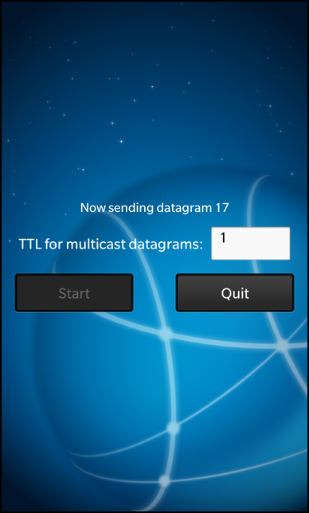

Files:
The Multicast Sender example shows how to send information to multiple clients in a multicast group.

In this example we'll learn how to use the QUdpSocket class to send and receive multicast messages on the network.
The example application is splitted in two executables, multicastsender and multicastreceiver. While the multicastsender allows the user to start the multicasting of messages on the local network, the multicastreceiver will listen on the local network for these messages and display the received ones in the UI.
The central class in multicastsender is Sender, which encapsulates the multicasting of the single messages and provides a property to display the current progress and status information of the multicasting and a property to change the time-to-live field of the multicast datagrams.
Whenever the user clicks the 'Start' button in the UI, the startSending() slot of the exported Sender object is invoked:
// A standard Button Button { text: qsTr ("Start") // Start the multicast on click onClicked: { enabled = false; _sender.startSending () } }
The 'status' property of the Sender object is bound against a Label control to visualize the current progress and status information of the sender.
// A standard Label Label { layoutProperties: StackLayoutProperties { horizontalAlignment: HorizontalAlignment.Center } text: _sender.status // Defines text style with custom font size textStyle { color: Color.White base: SystemDefaults.TextStyles.SmallText size: 35 } }
Additionally the the 'ttl' property of the Sender object is bound against a TextField control and is updated whenever the text of the TextField is changed by the user.
// A standard TextField TextField { leftMargin: 10 preferredWidth: 200 text: _sender.ttl // On text input store the text onTextChanging: _sender.ttl = text }
Inside the constructor of Sender we initialize the 'status' property, the counter for the number of sent messages and a timer object. This timer object is used to trigger the multicasting of the messages in an interval of 1 second. Additionally the QUdpSocket object is created, which encapsulates the low-level network access. The address of the multicast group is hard-coded to 239.255.43.21 here and will be used by the multicastreceiver as well.
Sender::Sender(QObject *parent) : QObject(parent), m_ttl(0) { // Initialize the multicast address m_groupAddress = QHostAddress("239.255.43.21"); /** * Initialize the 'status' property with some data, it will * be shown in the UI until the first datagram is sent. */ m_status = tr("Ready to multicast datagrams to group %1 on port 45454").arg(m_groupAddress.toString()); // Create the timer that triggers the sending of the multicast datagrams m_timer = new QTimer(this); // Create the UDP socket object. m_udpSocket = new QUdpSocket(this); // Initialize the datagram counter m_messageNo = 1; // Initialize the TTL setTtl("1"); /** * Create a signal/slot connection so that whenever the timer times out, the sendDatagram() * method is invoked. */ connect(m_timer, SIGNAL(timeout()), this, SLOT(sendDatagram())); }
The startSending() method, which is called when the user clicks on the 'Start' button, starts the timer, which will invoke the sendDatagram() slot whenever it times out.
void Sender::startSending() { // Start the timer with an interval of 1 second m_timer->start(1000); }
Inside sendDatagram() the actual work is done. At first the 'status' property is updated with the progress information and its change notification signal is emitted to let the UI update all property bindings where 'status' is involved in. In a second step the datagram content is assembled and afterwards it is multicasted over the network by calling writeDatagram() on the QUdpSocket object. Additionally to the datagram content and size we also pass the address of the multicast group and the port number, which is hard-coded to 45454 in this example.
void Sender::sendDatagram() { // Update the status message and signal that it has changed m_status = tr("Now sending datagram %1").arg(m_messageNo); emit statusChanged(); // Assemble the content of the datagram const QByteArray datagram = "Multicast message " + QByteArray::number(m_messageNo); // Send the multicast datagram with the given content to port 45454 m_udpSocket->writeDatagram(datagram.data(), datagram.size(), m_groupAddress, 45454); // Increase the datagram counter, so that the next sent datagram will have a different content ++m_messageNo; }
If the user changes the content of the TTL (time-to-live) field in the UI, setTtl() will be called with the content of the TextField as parameter. If the entered value is really a number and it differs from the current TTL we update the TTL property of the QUdpSocket object and signal that the 'ttl' property has changed.
void Sender::setTtl(const QString &ttlString) { bool ok = false; // Convert the input string to an integer value const int ttl = ttlString.toInt(&ok); // Ignore invalid values or if the new TTL is the same as the current one if (!ok || (m_ttl == ttl)) return; // Update the internal TTL value ... m_ttl = ttl; // ... and set it on the multicast UDP socket. m_udpSocket->setSocketOption(QAbstractSocket::MulticastTtlOption, m_ttl); emit ttlChanged(); }